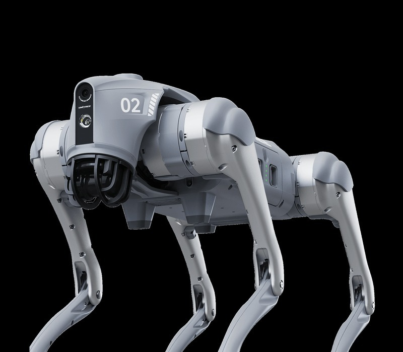

← Back to Products

UnitreeRequest a Quote
Unitree GO2-W Wheeled Robot Dog
The GO2-W combines the GO2 platform with 7-inch wheeled mobility for versatile outdoor/inspection use. With 0-2.5m/s speed and ability to climb obstacles up to 70cm, it excels on mixed terrain where traditional wheeled robots struggle.
Available in 5 configurations from Standard to Patrol edition, with Nvidia Orin compute (40-100 Tops), RealSense D435i depth camera, and optional D1 robotic arm for light manipulation tasks.
Speed
0-2.5m/s
Weight
~18kg
Obstacle
Up to 70cm
Battery
2-4h (15000mAh)
Model Variants
| GO2-W Standard (U1) | 40 Tops (Orin NANO), Realsense D435i depth camera, optional D1 arm, 16 joint motors |
|---|---|
| GO2-W Smart (U2) | 100 Tops (Orin NX), includes all Standard features, advanced AI algorithms |
| GO2-W LiDAR Smart (U3) | Adds Livox Mid-360 3D LiDAR + navigation algorithms |
| GO2-W Flagship (U4) | Adds Hesai XT16 premium 3D LiDAR + navigation |
| GO2-W Patrol (U5) | All Flagship features + dual-light gimbal (thermal camera), hardware-only patrol platform |
Technical Specifications
| Standing Size | 70 x 43 x 50 cm |
|---|---|
| Weight (with battery) | ~18 kg |
| Joint Motors | 16 |
| Tires | 7" pneumatic tires |
| Battery | 15000mAh, 2-4h runtime |
| Warranty | 1 year (body) |
Application Scenarios
✓ Industrial park/outdoor patrol
✓ Mixed terrain inspection (grass, gravel, slopes)
✓ Campus security
✓ Light industrial monitoring